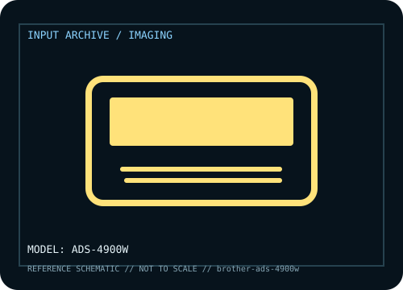

[ IMAGING AND AUDIO-CAPTURE PERIPHERALS // IDENTIFIED COMPONENT ]
Brother ADS-4900W Professional Desktop Scanner
High-volume duplex scanner with touchscreen, wireless/network connectivity and enterprise workflows.

MODEL IDENTIFICATION: Manufacturer model / identifier: ADS-4900W. Compare the unit label, regional suffix, and revision against manufacturer documentation before repair or compatibility claims.
Model specifications
| Catalog subcategory | Imaging and audio-capture peripherals |
|---|---|
| Exact model / ID | ADS-4900W |
| Model-specific features | Up to 60 ppm/120 ipm, 100-sheet ADF class, multi-feed detection; actual rate depends on resolution/paper. |
| Interface and host support | USB, Ethernet and Wi-Fi; software, driver and network security settings govern workflows. |
| Revision / driver caveat | Distinct from ADS-4300N; confirm label/firmware because third-party cloud destinations change. |
Preservation and service notes
Maintain rollers/separator, log jams/counter, protect network credentials and clean glass/sensor per manual.
Record the as-found label, accessories, host OS, driver or firmware version, and test method. Separate observed condition from published specifications; family-level claims are not proof of an individual unit's revision.
Manufacturer source
- Brother ADS-4900W Professional Desktop Scanner — manufacturer model pageModel-specific manufacturer reference for identifying specifications, regional SKU, and linked current support documentation.
Manufacturer pages can change or retire. Preserve the applicable manual and note its revision when documenting a physical device.